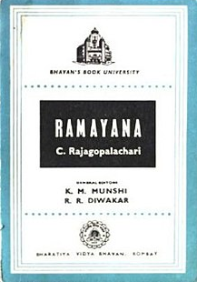
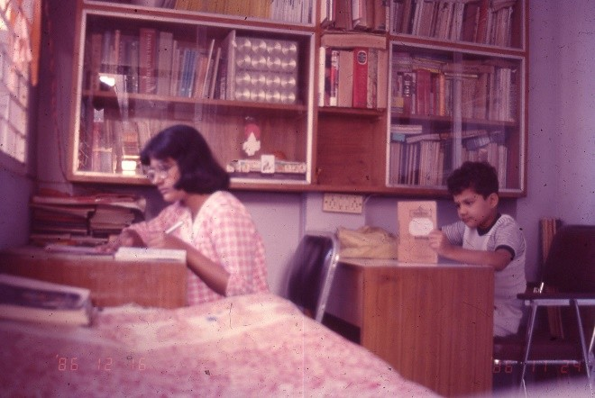

दोन महिन्यापूर्वी “तिसरा डोळा” (मटा जुलै २०२३) नावाचे एक स्फुट वाचनात आले. त्यात माहिती होती की
“पाण्यातील जीव, उभयचर, सरिसृप व पक्षी आणि अगदी सस्तन प्राण्यानाही मुळात तीन डोळे होते व तिसऱ्या डोळ्याचा
उपयोग प्राण्यांना कदाचित पाण्यातून बाहेर पडताना झाला असावा आणि आता तिसरा डोळ्याची उत्क्रांती पिनियल ग्रंथात कार्यरत झाली”.
माझ्या माहितीप्रमाणे मध्यंतरीच्या काळात ही ग्रंथी निरुपयोगी असल्याचे समजले जात होते. आता संशोधनात तिची अनेक कार्य लक्षात येत आहेत.
हीचे मुख्य कार्य म्हणजे आपल्या झोपेच नियंत्रण करणे.
ही ग्रंथी “प्रकाश संवेदनशील” आहे. म्हणजे आपल्याला दोन डोळ्यानी, प्रकाश-परिवर्तनाने वस्तुचे आकारमान, रंग व अंतर वगैरे लक्षात येते.
तर या ग्रंथीला फक्त प्रकाशांची तीव्रता समजते. प्रकाश कमी झाली की ही ग्रंथी संप्रेरक शरीरात सोडते व त्यामुळे आपल्याला झोप येते
(म्हणून चांगल्या झोपेसाठी, रात्री अंधार करणे व प्रकाश उत्सर्जित साधने मोबाईल वगैरे न वापरण्यास सांगतात कारण ही ग्रंथी गोंधळून
२४ तासाचे चक्र सांभाळू शकत नाही.)
मी सहज थोडाफार इकडे तिकडे शोध घेतला. सध्या “आपल्या पूर्वजांना हीचे कार्य कसे” माहित होते, हे सांगण्याची चढाओढ सगळीकडे सुरू झाले आहे.
बहुतेक पाश्चात्यानी अर्थात् इजिप्तमध्ये ममीच्या बाजूला काढलेला “डोळा” हा मेंदुच्या या ग्रंथी भोवतालचा आकार दाखवतो असे सिद्ध करण्यासाठी चित्रे टाकली आहेत.
तर आपल्याकडच्या योगी शिक्षकांनी भूमध्यातील आज्ञाचक्राची जागा म्हणजेच ही ग्रंथी व ती योगाने कार्यरत करता येते (व योगी करतच होते) असा दावा केला.
(मला नेहमी वाटते की पाश्चात्यानी संशोधनानंतर आपल्याला हे आधीच माहिती होत म्हणण्याऐवजी आपल्याकडे आधीच माहिती असलेल्यावर शोध का लावत नाही.)
शिवाय कुंकु गंध लावल्यानेसुद्धा ही ग्रंथी कार्यरत होते. (या ग्रंथीने कोणती शक्की प्राप्त होते ते अजून वाचनात आले नाही.) पूर्वीच्या भाषणात या ‘ग्रंथी’चे वगैरे उल्लेख नसे.
त्यावेळी आज्ञाचक्र ही पिट्युचला जागा होती असे सांगण्यात येत होते. (पिनीअल ग्रंथी मेंदूचे दोन भाग, मागे, जिथे जोडले जातात, त्या जागेत खालच्या बाजूला असते.)
मला यात दोन गोष्टींची भर टाकायची, एक संशोधन आधारित व एक कल्पनेची झोपेवर अगणित पुस्तक आहेत, पण “Why do we sleep” या पुस्तकात एक महत्त्वाचा मुद्दा
मांडला आहे. झोपेत जेव्हा स्वप्न पडतात तेव्हा आपला मेंदू जागृत असताना जेवढा कार्यरत असतो तेवढाच असतो. फरक असा असतो की जागृत अवस्थेत तो शरीराला आज्ञा
देऊन कार्य करून घेत असतो. झोपेत मेंदू शरीरावरचा ताबा Block करतो. त्यामुळे स्वप्नात आपले शरीर हालचाल करत नाही (क्वचित आपण, झोपेत हातवारे करतो
वा पाय झटकतो, काही जण खूपच हालचाल करतात, भीतीने ओरडतात, उठून फिरतातसुद्धा) या संशोधकाच्या मते जागेपणी ज्या भावना आपण सभ्यतेने दाबून ठेवतो व त्याची
पूर्ण तीव्रता अनुभवत नाही, ती तीव्रता आपण स्वप्नात अनुभवून समाधानी होतो. दरवेळच्या स्वप्नाने या अनुभवाच्या तीव्रता कमी होत जाते. परिणामतः मानसिक विकार
होण्याची शक्यता कमी होते.
दुसरी गोष्ट - आपल्याकडे तिसरा डोळा फक्त एका देवाला बहाल केला आहे. वस्तु व या देवाची प्रतिमा इतरांपेक्षा अत्यंत निराळी आहे. तो झटकन रागवतो वा प्रसन्न होतो.
तो एकटा राहणे आणि भटकंती पसंत करतो. त्याचे निवास स्थान इतरापेक्षा निराळे आहे. त्याची वेशभूषा निराळ आहे. तो योगेश्वर आहे (योगाचा आद्य संस्थापक) तसच
तो नटेश्वर आहे (जीवनात रस आणणारा आहे) म्हणून मदनाचा दाह करणाराही आहे व ब्रम्हचारी रामदासानी म्हटल्याप्रमाणे “उमा वेव्हाळा” (वा: काय शब्द आहे,
असा नेमका शब्द रामदासच वापरू जाणे) ही आहे. कालीदासाने आपल्या प्रत्येक कलाकृतिचा आरंभ, याच्या परस्पर विरोधाभासाने भरलेल्या वर्तनाने त्याला एक
(अद्वितीय) असे संबोधले आहे. अर्थात् त्याचा तिसरा डोळा उघडतो तो क्रोधानेच (उघड आहे, की ‘उघडतो’ म्हणजे तो सतत निद्रिस्त असला पाहिजे.
आताच्या संशोधनाने ही ग्रंथी झोपेत कार्यरत असते, जागेपणात नाही.) व हा तिसरा डोळा ज्यावर लक्ष केंद्रित करतो. ती वस्तु (जसे भिंगातून सूर्यकिरण एकत्र
केल्यावर होते तशी) भस्म होते. अर्थात् तिसरा डोळा ज्याचा जागृत झालेला असता ती व्यक्ति कशी असावी याच हे वर्णन आहे काय अशी शंका येते. अर्थात् हे विचार
आल्यावर गंमत वाटली. पण कल्पनांची भरारी; म्हणजे गोष्ट सिद्ध होणे नव्हे!
(सूचना - ज्यांना नारायण धारप यांची ॐ ग्रहावर वस्ती ही गोष्ट वाचण्याची इच्छा आहे त्यांच्यासाठी या लेखात गोष्टीचा शेवट आलेला आहे.)
जपानने चंद्रावर यान उतरवलेले वाचून खूप गंमत वाटली. (वस्तुतः भारताने उतरवले तेव्हाही आठवण झाली होती.) कारण बऱ्या
वर्षांपूर्वी मी नारा>यण धारप यांची ॐ ग्रहावर वस्ती ही गोष्ट वाचून त्यांची अचाट कल्पनाशक्ती आणि तत्त्ववेत्तेपणाची पातळी पाहून थक्क झालो होतो.
आज त्यांची नुसती कल्पनाशक्तीच नव्हे तर त्यांच्याकडे विज्ञानकथा लिहिणाऱ्या अनेक प्रसिद्ध लेखकांप्रमाणे भविष्यातील वेध घेण्याची शक्ती होती की
काय अशी शंका येते.
आव्हानच्या काही वाचकांना नारायण धारप माहीत असतील व तेही बहुधा भयकथा लिहिणारे म्हणून; नारायण धारप यांनी जवळपास शंभरेक पुस्तके
लिहिली असल्यामुळे ही अनवट गोष्ट वाचली असल्याची शक्यता खूपच कमी!
गोष्टीच्या सुरुवातीला ॐ ग्रहावरची नेतेमंडळी चिंतेत आहेत कारण त्यांचा ग्रह काही शतकांनी माणसांना राहण्यास अयोग्य होणार आहे.
शास्त्रज्ञांनी त्यांना याची कल्पना दिली आहे. पण ही बातमी त्यांनी खूप गुप्त ठेवली आहे. (इथेही सरकारची अशा बातम्या गुप्त ठेवण्याच्या प्रथेबद्दल
नारायण धारप जाण दाखवतात) व त्यामुळे ते आपले सर्व ग्रहवासी दुसऱ्या कुठल्या ग्रहावर स्थलांतर करू शकतात याचा शोध अनेक वर्षे घेत आहेत.
त्यांना हा शोध अजून लागलेला नाही. कारण त्यांच्या जवळपासचा कुठलाही ग्रह अजूनतरी राहण्यालायक नाही.
एक ग्रह अगदी जवळ आहे पण तो राहण्याजोगा होण्यासाठी खूप कालावधी आहे. तोपर्यंत तरी आपली वस्ती टिकावी यासाठी ते प्रयत्न करत आहेत.
त्यातच त्यांच्याकडे दुसऱ्या माणसाचे विचार ओळखण्याच्या यंत्राचा शोध लागला आहे. शासन तीही गोष्ट गुप्त ठेवायचा प्रयत्न करते. पण शेवटी ते सामान्य
माणसांच्या हाताला लागते व त्यामुळे आपला ग्रह नष्ट होणार असल्याचे कळल्याने हलकल्लोळ होतो. (प्रत्येक गुप्ततेचा परिणाम हाच असतो.) आत्मरक्षणाची
धडपड सुरू होते. शासकीय योजनेनुसार ग्रहाच्या एका भागावर आरिष्ट सर्वात शेवटी येणार असते. ते कळल्यावर सर्वजण तिकडे जाण्याची धावपळ करतात.
हे तर मनोरंजक आहेच पण नारायण धारपांचा मोठेपणा यात आहे की त्यांनी आपल्या या स्वप्नरंजनाला तत्त्वज्ञानाची डूब दिली आहे. कारण त्यांचे शासन माणूस
जमात जगवण्याचा विचार करताना अत्यंत उच्च विचाराला येऊन पोहोचतात. “आपल्याला मानवजात टिकवायची म्हणजे काय?” जिवंत माणसं? त्यांचं शरीर? की
काय?” शेवटी ते अशा अशा मताला येतात की आपल्याला टिकवणे म्हणजे आपली संस्कृती टिकवणे. जेव्हा हे मी वाचले तेव्हा मला आश्चर्य वाटले. कारण तर्कतीर्थ
लक्ष्मणशास्त्री जोशींनी “वैदिक संस्कृतीचा विकासा”मध्ये वैदिक लोकांनी अमर होण्याच्या शोधाचा जो मागोवा घेतला आहे, तो हेच दाखवतो. वैदिकांनी आपल्याला अमरत्व
कोण देऊ शकेल हे शोधण्याचा शेकडो वर्ष प्रयत्न केला. त्यात प्रथम अग्नी (कारण तो मरत नाही), नंतर देवांचा वर (कारण त्याने अमर कसे होता येते माहीत आहे) व
नंतर अमृत (असे काही द्रव्य असते जे सोमापेक्षाही वरचे असेल) अशा अनेक गोष्टींचा एकामागून एक शोध घेत ते अशा निष्कर्षावर पोहोचले (ॐ ग्रहवासियांनी
ठरवल्याप्रमाणे आहे) की व्यक्ति त्यांच्या ‘पुत्र रुपाने’ अमर होते; (म्हणजे संस्कृती टिकवते.) त्यामुळेच वैदिक संस्कृतीत पुत्र या संज्ञेला अतोनात महत्त्व प्राप्त झाले.
“अष्टपुत्रा, दशपुत्रा आशिर्वाद सहज देण्यात येत असे. इतकेच काय पण पित्याने पुत्राच्या डोळ्याकडे पाहून प्राण सोडल्यास पिता पुन्हा जिवंत होतो असेही आहे.
महाभारतातील विदुराचे प्राण युधिष्ठिरात प्रवेश करतात अशा वर्णनाने इरावती कर्व्यांनी युगांतमध्ये धर्म विदुराचा मुलगा होता असे म्हटले आहे.
त्यामुळे ॐ ग्रहावरचे सूज्ञ ठरवतात की आपण आपली बीजं एका कुपीत बंद करावीत व ती कुपी शेजारच्या ग्रहाभोवती फिरती ठेवावी.
जेव्हा तो ग्रह मानवाला राहण्यास योग्य होईल तेव्हा ती कुपी त्या ग्रहावर पडून उघडेल, व मानव जन्माला येईल. शेवटच्या प्रकरणात नारायण धारप लिहितात
“चंद्रावर चार मानव उभे आहेत.” त्यांनी चंद्रावर मानव पाठवायचा क्रमही लिहिला आहे - अमेरिका, रशिया, जपान, भारत. इथे आपल्याला कळत
ॐ म्हणजे चंद्र व त्यांच्या शेजारचा त्यावेळी राहण्यास योग्य नसणारा ग्रह पृथ्वी आहे.
नारायण धारप यांचा अंदाज फक्त काही महिन्यांनी चुकला व जपानच्या आधी भारत चंद्रावर पोहोचला. एवढी चूक आपण क्षम्य मानू व आपण आधी पोहचलो
याचा जरूर अभिमान बाळगू.
म्हणून नारायण धारप तुमच्या कल्पनाशक्तीला, भविष्याचा अचूक वेध घेण्याच्या प्रतिभेला व अमरत्व कशात आहे याची असणाऱ्या जाणीवेला सलाम!
(अर्थात् ते तिथे पोहचल्यावर काय होते ते तुम्हाला वाचायला शिल्लक ठेवतो.)
साधारण १९७९-१९८० चा Oil Crisis चा काळ. निमिडने Sydenham College मध्ये MBA विद्यार्थ्यांसाठी ६ महिन्याचा एक
MBA in Entrepreneurship चा Diploma कार्यक्रम घेतला होता. . विद्यार्थ्यांसाठी अशा प्रकारचा हा पहिलाच कार्यक्रम असावा.
हा कार्यक्रम Nimid चे संस्थापक संचालक व ज्यांना सार्थपणे Entrepreneurs Development Program चे भीष्माचार्य म्हणत;
ते नाडकर्णी Conduct करणार होते. या कार्यक्रमात ३०-४० विद्यार्थी सामील होते. इतक्या मोठ्या संख्येने Participant ना
हातळण्याचा काम नाडकर्णीनी पूर्वी कधी केले नव्हते. ते सहसा १५ ते २० जणांचा Group हाताळत असत.
माझी भूमिका त्यांच्याबरोबर राहण्याची होती व बघ्य़ाची होती. कार्यक्रमात मी भाग घेत नसे. परंतु मला आलेले दोन-तीन
अनुभव माझ्या मनावर खोल परिणाम करणारे होते. त्यातलाच एक.
त्या दिवशी विद्यार्थांना नाडकर्णीने “तुम्हाला कुठे कुठे काय काय संधी दिसतात ते लिहायला सांगितले होते” व,
निमिडची नेहमीची पद्धत, ७-८ मुलांचा ग्रुप करायचा व चर्चा करायची व मग प्रत्येक ग्रुपमधील एकाने, सर्वांचा मिळून केलेला
एक कागद वाचायचा अशी होती. त्याप्रमाणे Groups केले गेले.
साधारण पाउन एक तासाने चर्चा झाली असे गृहीत धरून, एकेकाने त्यांच्या त्यांच्या Group representative ने ग्रुपचे विचार
वाचायला सुरवात केली. साधारण ३ जणांचे वाचन झाल्यावर एका मुलाने “आमच्यातले काही जण तर खेड्यात जायालाही तयार
आहेत” असे (तर सुद्धावर जोर देत) वाचल्यावर एक आवाज आला “What is great about it?” सगळ्यांऱ्या नजरा
बोलणाऱ्याकडे वळल्यावर तो मुलगा म्हणाला “तू वाचताना तुम्ही लोक जणू काही फार मोठे नवल करत आहात असे दाखवताय.
खेड्यात जातो यात नवल काय? संधी आहे म्हणू तुम्ही स्वतःसाठी जाताय. “What is Great”
Frankly; मला माझ्या कुटुंब व्यवसायाने खेड्याचा थोडा अनुभव होता. त्याच वर्ष १९८० ची परिस्थिती खूपच बिकट होती.
या मुलाला बहुधा खेड्यातला अडचणीची माहीती नसावी असे इतर सर्वांना तसेच (बहुधा त्याचा ग्रुप सोडून) मलाही वाटले.
वाचणारा जरा आवाक झालेला दिसला. व क्षणात जवळ जवळ सगळे त्यांच्या Group वर तुटून पडले. सर्वाचा सूर एकच तुला
खेड्यात काय नाही हे माहीत नाही ते अडचणींचा पाढा वाचत होते. त्याचा ग्रुप आपला मुद्दा लढवत होता. सगळे जण एकदम
बोलत होते. नाडकर्णीने (निमिड पध्दती प्रमाणे) साधारण १० ते १५ मिनिटे खूप गोंधळ चालू दिला. व १५ मिनिटानी त्यांनी सर्वांना
शांत राहण्याची खूण केली व त्या मुलाला सांगितले “ठीक आहे; तू इथे येऊन तुला काय सांगायचे ते सांग व बाकीच्यांनी जरा तो काय
म्हणतो ऐका, मी नंतर सर्वांना बोलायची संधी देणार आहे”.
तो मुलगा उठला व Class ला उद्देशून ते म्हणाला. ते त्याच्याच शब्दात.
“My name is Mustafa” मी व माझा ग्रुप N.C.C. च्या कार्यक्रमासाठी पुणे येथील शिरुर गावात Training साठी मे महिन्यात 1½
महिन्यासाठी गेलो होतो. आम्ही माळरानावर कॅम्प उभा करतानाच, “आता किती दिवस राहिले” याची गणती सुरू केली. सर्वत्र माळरान होते.
गाईच्या शेणाचा वास येत होता. माशा होत्या. सर्वत्र भकास. त्यात प्रचंड कडक ऊन, आमची पहिला साप्ताहिक सुट्टी, आल्यावर आम्ही पुण्याला
पळालो. रात्री परत आल्यावर पुढचा आठवडा; पुन्हा किती दिवस दिवस राहिले मोजण्यात घालवला) अस दोन-तीन वेळा झाले. जरा संधी
मिळाली की आम्ही पुण्याला जायचो.
एके दिवशी दुपारी ऊन रणरण असताना मी टेन्ट बाहेर माशा हाकलवत राजगोपालचारी यांनी लिहिलेले ‘रामायण’ वाचत होतो (मला आणखी
धक्का अरेच्या! मुस्तफा आणि रामायण! आणि ते सुद्धा राजगोपालचारींचे. प्रसंग होता दंडकारण्यातला.
सीता रामाला म्हणते “O my beloved Ram! Let us make this Dandkarinya our Ayodhya” हे वाक्य मी वाचलं आणि थांबलो.
काय झाले माहीत नाही पण परत वाचले. नक्कीच काहीतरी

झाले. मी आजूबाजूला पाहिले. खर तर सर्व scene तसाच होता, ऊन, माशा व शेणाचा वास.
पण मला आता त्या माशांचा राग येईना, शेणाचा वास घाण वाटेना. उन्हाचे काही वाटेना.
एकदम ती जागा कुठल्याही प्रकारे निराळी वाटेनाशी झाली. आणि एकदम मनात आल “Ayodhya is never outside! it is
always inside” let me make this my Ayodhay.”
आणि त्यानंतर मी कधीही पुण्याला गेलो नाही अस म्हणून तो जागेवर गेला.
सर्व Class स्तब्ध. नाडकर्णीनी शांततेचा भंग केला. “कोणाला काही बोलायचा” कोणी ‘नाही’ अस पण म्हटल नाही. “Ok चहाची वेळ
होत आली आहे. कोणाला काही म्हणायच नसेल तर चहाला जाऊया”.
प्रत्येक व्यक्तीत भविष्य जाणून घेण्याची उर्मी असतेच आणि अनिश्चिततेने भरलेल्या जगात तर नक्कीच. “देवाघरचे ज्ञात कोणाला” म्हणत
हात, चेहरा, हस्ताक्षर, कुंडली, छाया, फासे, Magic Ball, पक्ष्याचे आवाज याद्वारे भविष्य सांगून पैसे कमवण्याची अनंत साधने
माणसांनी शोधून काढली आहेत. खरे तर टॉलस्टॉयने त्याच्या “What Men Live By” या ह्रद्य गोष्टीत सांगितले आहे की देवाने माणसाला
त्याला खरे काय पाहिजे ही समज दिलेली नाही आणि म्हणून माणसे एकत्र आहेत.
अर्थात् मलाही भविष्याचा (माफक) नाद होता. कुंडलीवरची थोडी पुस्तके वाचली होती; थोडा हस्तसामुद्रिकवरही हात मारला होता.
पण माझी प्रगती शून्यच होती. तरुण वयात माझी ज्या तिघांशी मैत्री जमली त्यात एक होते जव्हेरी; यांना अनेक ज्योतिषींकडे मला घेऊन
जाण्याचा नाद होता. दुसरे भेंडे; यांचा आपल्याला पत्रिका समजते असा समज होता. तिसरे शांताराम पवार; यांच्याकडे मात्र एक अफलातून
विद्या आली होती, जी त्यांनी त्यांच्या अंतःप्रेरणेतून आत्मसात केली होती. इथे मी माझे दोनचार अनुभव व सर्वात शेवटी मी कुठल्या
निष्कर्षाला पोहोचलो ते लिहिले आहे.
प्रथम मी माझे तत्त्व सांगतो. “I am perfectly rational to believe in irrationality and irrationality is a first
step toward rationality” अंधश्रद्धा निर्मूलनाचे कार्यकर्ते ज्योतिष सांगणाऱ्यांना लाखांची आव्हाने देतात. पण मी स्वतः तीन असे
अनुभव सांगू शकतो की ज्यांची rational उत्तरं मला अजून मिळालेली नाहीत.
एकाने माझी छाया मोजून भृगुपत्रिकेतील माझे (त्यांच्या मते) पान वाचून बरोबर सांगितले की माझ्या आईवडिलांचा आंतरजातीय विवाह आहे,
वडिलांकडे गाडी आहे पण स्वतःचे घर नाही, किर्ती आहे पण पैसे नाहीत. एकदा मी जव्हेरीच्या घरी गेलो असता एक गृहस्थ (ज्योतिषी) वाट पाहत होते.
ते वैतागून म्हणाले, “द्या कुंडली.” मी माझ्याऐवजी वडिलांची कुंडली दिली. बघितल्यावर क्षणात त्यांच्या भुवया उंचावल्या व ते ताबडतोब ठामपणे म्हणाले,
“ही तुमची कुंडली नाही; हे गृहस्थ गव्हर्नमेंटमध्ये मोठ्या पदावर आहे व यांना तुरुंगवास घडला आहे, पण चांगल्या कामासाठी.” वर समजावले की बाराव्या
घरातला चंद्र तुरुंगवास घडवतो, पण गुरु योग असेल तर चांगल्या कामासाठी. “तुमच्या मनात आता परदेशात जाण्याचे आहे पण तुम्ही जाऊ शकणार नाही.”
(जाऊ शकलो नाही.)
पण माझा भविष्याचा नाद सुटण्याचे कारणसुद्धा एक प्रसिद्ध ज्योतिषीच. एकदा जव्हेरीने मला मलबार हिलवरील पंडित नावाच्या ज्योतिषाकडे नेले.
(हे वसंत कुमार पंडित या जनसंघाच्या नेत्याचे वडील.) यांनी अनेकांना रेसकोर्सबद्दल सल्ला दिल्याचे जव्हेरीने सांगितले. १९८० मध्ये त्यांच्या मलबार
हिलच्या बंगल्याच्या आत लिफ्ट होती.
आम्ही चौघे (दुसरे दोघे भेंडे व शांताराम) दुपारी चारला गेलो. लिफ्टमधून गेल्यावर तिथे कोणी नव्हते. साधारण अर्धा-पाऊण तासाने पंडित आले.
कमी उंची, जरासे स्थूल, धोतर-झब्बा आणि चष्मा. ते येऊन टेबलावर बसले व म्हणाले, “प्रत्येकाने कुंडली दाखवा. मी एक गोष्ट सांगेन ती जर बरोबर असेल;
तर एकच प्रश्न विचारा; माझ्या उत्तराचे ३० रुपये”.
इतर तिघांचे आठवत नाही. शेवटी माझी पाळी आली. मी कुंडली हातात दिल्यावर क्षणात खाली टाकून म्हणाले, “तुमच्या पत्नीचे नुकतेच सिझरियन झाले आहे.”
मी टेबलावर तीस रुपये ठेवले आणि म्हटले, “शास्त्रीबुवा, मी बऱ्याच ज्योतिषींना भेटलो. आपल्या प्रदीर्घ अनुभवाने आपल्यासाठी माझ्याकडे एकच प्रश्न उरला आहे.
ज्योतिष खरं होतं का?”
शास्त्रीबुवांनी डोळे मिटून एक संस्कृत श्लोक म्हटला. “पुता, काही कळलं का? हा विश्वमित्र कौमुदीतला पहिला श्लोक आहे. त्याचा अर्थ भविष्याचा उपयोग ना ऐकणाऱ्याला,
ना सांगणाऱ्याला. पण जेव्हा जादूगार आपल्या पेटीतून त्याची वस्तू काढतो, तेव्हा ती वस्तू
नवीन नाही माहीत असूनही तुम्ही त्याच्या
कलेचं कौतुक करता, तसेच या कलेचंही करा”.
खरे तर मला इथपर्यंत फारसे समजलेच नव्हते. बहुधा शास्त्रीबुवांना कळले. “मी तुमचा भूतकाळ इत्यंभूत सांगू शकतो. वेळ दिलात तर तुम्ही लिफ्टमध्ये काय बोललात,
तो विषयही सांगू शकतो. पण इथून उठल्यावर काय होईल हे मी सांगू शकत नाही. भूतकाळ अचूक सांगणं हे माझ्या धंद्याचं भांडवल आहे. म्हणून तुमचा विश्वास बसतो.
पण त्या कलेला कोण मोल देणार?”
मग ते उठले व आत गेले. मी मागचे अनुभव आठवले. सर्व ज्योतिषींनी भूतकाळ अचूक सांगितला होता पण भविष्य कोणाचेच खरे झाले नव्हते.
सध्या AI ची चलती असल्यामुळे “यापुढचा इतिहास माणसाचा नसेल तर यंत्राचा असेल,” “पुढच्या पाच वर्षात जगातील
निम्म्या लोकांच्या नोकऱ्या जाणार” अशी भाकिते विचारवंत करत आहेत.
AI माणसांच्या भावना ओळखू शकेल का? ओळखून प्रतिसाद देईल का? अशा प्रश्नांची उत्तरे होकारार्थी येत आहेत.
हे वाचल्यावर मला ‘असिमॉव्ह’ या विज्ञानकथा लेखकाच्या एका गोष्टीची आठवण झाली.
असिमॉव्ह यांचे नाव आव्हानच्या वाचकांना माहीत नसण्याची शक्यता कमी आहे. त्यांनी इतकी पुस्तक लिहिली की त्यांचे समकालीन
लेखक आर्थर सी. क्लार्क गंमतीने म्हणाले होते की माझ्या दोन इच्छा होत्या; एक मोठी व एक छोटी. पहिली असिमॉव्हपेक्षा जास्त
पुस्तके लिहिण्याची व दुसरी छोटी नोबेल प्राईझ मिळवण्याची. पहिली शक्य नसली तरी निदान छोटी तरी पूरी होऊ दे.
असिमॉव्ह यांचे विज्ञानकथांचे योगदान म्हणजे त्यांनी विज्ञानकथा “फ्रँकेन्स्टाईन” या विचारातून बाहेर काढल्या. तोपर्यंत बहुसंख्य
कथा या परग्रहावरचे लोक व विशेषतः मानवाने केलेल्या प्रयोगातून निर्माण केलेली यंत्रे माणसाचा ऱ्हास करतील या गृहीतकावर बेतलेल्या असत.
असिमॉव्ह यांनी अशी कल्पना मांडली की मानवाने जर यंत्रमानव केला तर तो त्यात तीन आज्ञांचा अंतर्भाव करेल –
१) मी जाणूनबूजून मानवाला इजा करणार नाही, २) जोपर्यंत पहिल्या आज्ञेचे उल्लंघन केले जात नाही तोपर्यंत मी मानवाच्या आज्ञा तंतोतंत ऐकेन,
३) जोपर्यंत पहिल्या दोन आज्ञांचे उल्लंघन होत नाही तोपर्यंत मी स्वतःला वाचवण्याचा प्रयत्न करेन.
असिमॉव्हच्या मते या तीन आज्ञा पुसणे किंवा बदलणे शक्य होणार नाही असा मेंदू बनवला तर यंत्रमानव मानवाला इजा करू शकणार नाही.
या कल्पनेचा खूप बोलबाला झाला व पुढचे विज्ञानकथा लेखक यंत्रमानव हा भस्मासूर नसून मानवाचा आज्ञाधारक नोकर आहे अशा कथा लिहू लागले.
यंत्रमानवाच्या प्रगतीच्या कल्पनेत असिमॉव्ह यांना कल्पना केली आहे की यंत्रमानव बनवणारी एकच कंपनी असेल. कारण याच कंपनीकडे
यंत्रमानवाच्या मेंदूत तीन आज्ञा बनवण्याचे तंत्रज्ञान असेल. अशा कंपनीमध्ये यंत्रमानवाचा “मानसशास्त्रज्ञ” असेल. असिमॉव्हनी ही व्यक्ती
‘सुझान केव्हीन’ नावाची स्त्री कल्पिलेली आहे. ती स्वतः जरी मानव असली तरी कंपनीतील लोक, तिच्या अत्यंत तर्कशुद्ध विचाराने
“ती बहुधा यंत्रमानवच आहे” असे थट्टेने म्हणत असत.
एकेदिवशी यंत्रमानवाच्या निर्मिती प्रक्रियेत अनोख्या कारणाने एक यंत्रमानव दुसऱ्याच्या मनातले विचार ओळखू शकतो, असे लक्षात
येते. हा बहुमूल्य अपघात कसा घडला व यामुळे इतका “प्रगत” मेंदू कसा तयार झाला हे शोधण्यासाठी सुझान यांना बोलवण्यात येते.
रोज त्याची प्रश्नोत्तर परीक्षा चालते. त्याला खरंच ओळखता येते का? असेल तर, मेंदूतल्या कुठल्या सर्किटमध्ये बदल झाला आहे? असला
तर कोणता व कसा? कंपनीत दोन अत्यंत हुशार संशोधक असतात; एक वयस्क व एक तरुण. यांच्यात जोरदार स्पर्धा असते. हे दोघे
व सुझान असे तिघे आळीपाळीने यंत्रमानवाला भेटत असताना यंत्रमानवाला आपल्या स्पर्धकांच्या मनात आपल्याबद्दल काय चालले आहे हे कळले
तर किती छान होईल, असा विचार ते करत असतात. यंत्रमानव त्यांना एकमेकांबद्दल किती आदर आहे ते सांगत असतो. इतकेच नव्हे तर
सुझानला तरुण शास्त्रज्ञ तिच्या प्रेमात असल्याचे पण सांगतो. ती आश्चर्यचकीत होते. तिच्यात बदल होऊ लागतो. ती थोडी आकर्षक दिसण्याचा
प्रयत्न करू लागते. एका प्रसंगात तिच्या लक्षात येते की यंत्रमानव तिला बरे वाटावे म्हणून खोटे बोलत आहे. यंत्रमानव कबूल करतो की मला दिलेल्या
आज्ञेमुळे मी मानवाला इजा पोहोचवू शकत नाही. मला मनातले ओळखता येत असल्याने मी तुला खरे सांगितले तर तुझ्या मनाला इजा पोहोचणार
असल्याने, मी खरे सांगू शकत नाही.
क्षणभर सुझानला दुःख होते. क्षणभरच... ती शास्त्रज्ञ असल्यामुळे यंत्रमानवाला सांगते, “तुला मानवी स्वभाव माहीत नाही.
तू खोटं सांगितलंस तर त्याला तात्पुरते बरं वाटेल. पण ते खोटं होतं हे कळल्यावर दुःख होईल. पण मानवाला तू खरं सांगितलंस तर त्याला
त्यावेळी तात्पुरतं दुःख होईलच. तेव्हा तू खरं-खोटं काहीही सांगितलंस तरी मानवी मनाला इजा पोहोचणारच.” यंत्रमानवाचा मेंदू पूर्णपणे गोंधळतो.
सर्व सर्किट वेडीवाकडी धावतात व त्याचा मेंदू निकामी होऊन त्याची हालचाल बंद पडते. सर्व धावत येतात व यंत्राची अवस्था पाहून खूप पैसे
कमवायची संधी गेल्यामुळे सुझानला दोष देऊ लागतात.
ती त्यांना समजावते, “खोटं बोलणाऱ्या यंत्रमानवाचा काही उपयोग नाही. कोणी विकत घेणार नाही. तो केवळ एक भंगार आहे.” सर्वांना पटते.
दोन्ही शास्त्रज्ञांना आपण फसवले गेल्याची जाणीव होते. सर्वजण बाहेर जातात. सुझान शेवटी बाहेर पडते व मागे वळून पाहत म्हणते, “खोटारड्या.”
मला वाटते माणसाच्या मनातला विचार ओळखायला AI चा काही उपयोग नाही. उग्गाच भिती बाळगू नका.
मागच्या अंकात मी AI जर माणसाचा मन ओळखू लागला तर काय होईल; यावरील असिमॉव्ह यांच्या कथेची ओळख करून
दिली होती. त्यावरून असिमॉव्ह यांच्या दुसऱ्या कथेची आठवण झाली. तिचे नाव ‘ऑलिम्पिक’. ही माझी आवडती कथा
का ते शेवटी आहे.
कथेची सुरवात होते ती सकाळी; कथेचा नायक व त्याचा सहवासी यांच्या संवादातून. नायक आठवण करतो “आज ऑलिम्पिक आहे”
सहवासी म्हणतो “तुझा काही संबंध नाही” संवादातून व आठवणीत त्यावेळचे जग उलगडते. पृथ्वीवर मुलं शाळेत जाण्यायोगी झाली की
त्यांच्या डोक्याला यंत्र लावले जाते व यंत्रावरच्या Tape चे ज्ञान मेंदूत भरले जाते (म्हणजे २०व्या शतकातले Tape Recording.)
असे केले की मुलांना अनेक महिने शिकवायची जरूर नसते. ताबडतोब अक्षरे वाचता येऊ लागतात. नंतर काही काळाने परत
तपासणीमध्ये मेंदू कुठल्या क्षेत्रात उपयोगी होऊ शकेल याची चाचणी घेतली जाते, आणि त्याला लागणाऱ्या Tapes त्या डोक्यात भरल्या जातात.
दर चार वर्षांनी अशा Tapes भरलेल्या मुलांच्या स्पर्धा होतात या स्पर्धेला इतर ग्रहावरचे मानव, जिथे पृथ्वीपेक्षा खूपच सुसंपन्न असे जीवन आहे,
ते येत असतात; व स्पर्धेमधून जिंकून आलेल्या मुलांना आपल्या ग्रहावर येण्याचे (भरपूर पगार देऊन) आमंत्रण देतात. यात काही ग्रह
खूपच संपन्न असल्याने सर्वांना त्या ग्रहावर जाण्याची ईर्शा असते. व तिथले ग्रहवासी सर्वात Top मुलांना घेतात. (म्हणजे Gold Medal वाले
आपल्याकडील campus interview किंवा IPL मधल्या auction ची आठवण होईल.) या स्पर्धांना ऑलिपीक म्हणण्याची पद्धत असते.
यात अर्थात् पृथ्वी त्यांच्या शिक्षणाचा खर्च वसूल करते. हेच पृथ्वीचे Income असते.
कथेच्या नायकाला मात्र १२व्या वर्षी जेव्हा पुढील ज्ञानाच्या Tape भरायच्या असतात तेव्हा ‘डॉक्टर’ त्याचा मेंदू scan करतो. त्यांच्या
चेहऱ्यावर चिंता पसरते. परत test करतो व इतर मुलांना पुढील Tapes साठी ज्या खोलीमध्ये पाठवले असते त्यापेक्षा निराळ्या खोलीत पाठवतो.
तिथे एकजण असतो व याला पाहिल्यावर गंभीरपणे म्हणतो “दर वर्षी एक दोन असे येतातच” नायक म्हणतो “म्हणजे? मला Tapes मिळणार नाही”.
“नाही दरवर्षी एक दोन असतात त्यांचा मेंदू Tape घ्यायला लायक नसतात. आता तुला एका संस्थेत पाठवण्यात येईल. तुझे सर्व आयुष्य तिथे काढायचे आहे”?
“काय म्हणजे माझे आयुष्य फुकट जाणार तिथे मी काय करायचे” काही नाही; तुझी सर्व व्यवस्था होईल. हो आणि वेळ घालवायला
या संस्थेत फार जुन्याकाळी ज्याप्रमाणे मुले ज्यातून ज्ञान घेत होती, तो “अत्यंत निरुपयोगी” असा प्रकार म्हणजे पुस्तक नावाच्या वस्तु असतील.
“पुस्तक! म्हणजे जे एक वाचायला पूर्वी वर्षानुवर्षे लागायची ते यंत्र? नाही, मी जाणार नाही. मला Tapes द्या मेंदूला काही झाले तर चालेल.
पण मला Tapes द्या” तेवढ्यात दोन व्यक्ती येऊन त्याला इंजेक्शन देतात.
नायक उठतो तेव्हा त्याला एका खोलीत एक सहवासी दिसतो. जरा वयाने मोठा तो म्हणतो वेलकम. ही कमकुवत मेंदूच्या मुलांची संस्था आहे व
मला तुझी काळजी घेण्यासाठी नेमणूक झाली आहे. मी सुद्धा तुझ्यासारखाच Tapeमधून शिक्षण घेण्यास लायक असल्याने इथे आलो आहे.
नायक पुन्हः पुन्हः बंडखोरी करण्याचा प्रयत्न करतो; पुस्तकातून ज्ञान मिळवायला नकार देतो व पळण्याचा प्रयत्न करतो पण सुरक्षा व्यवस्था कडक असते.
अशी दोन-तीन वर्षे गेली तरी नायकाची बंडखोरी कमी होत नाही. आणि तो ऑलिम्पिक दिवस उजाडल्यावर मात्र प्रयत्न करून निसटतो.
आपण पृथ्वीवर राहायचे नाही आपले आयुष्य संपन्न ग्रहावरच घालवायचो. या निश्चयाने पळतो, ऑलिम्पिक जागेवर येतो. पोलीस मागावर
असतात. तिथे त्याला त्याचा मित्र भेटतो. निराश असतो, म्हणतो अरे परिक्षेत माझ्या Tapes पेक्षा जास्त Advance Tapes मिळवलेल्या
मुलाला (म्हणजे आत्ताच्या ‘कोटा’ classesमध्ये गेलेल्यांना) जसा IIT मध्ये प्रवेश सुलभ होतो. तसे त्याला पाहिजे तो ग्रह मिळाला;
मला मात्र ४ नंबरचा. आवतीभोवती असंख्य मुले यशापयशाची चर्चा करत असतात. कोणाला कुठला ग्रह मिळाला. नायक खटपट करत संपन्न
ग्रहावरच्या प्रतिनिधीला भेटतो व “मी आपल्या ग्रहावर नक्की उपयोगी पडेन. मी स्वतः Tape करेन. तुम्हाला पृथ्वीवर यायला नको.” पण ते अर्थात्
“तुला काही ज्ञान नाही, तर काय उपयोग”? “मी पुस्तक वाचून ज्ञान मिळवीन”. ते त्याची खिल्ली उडवतात. “अरे आता ज्ञान एवढे पुढे गेले
आहे की Tape ने भराभर जो शिकणार नाही तो मागे पडेल.” तेवढ्यात पोलीस येतात. नायकाला गुंगीचे इंजेक्शन देतात.
नायक शुद्धीवर येतो तेव्हा तो परत त्याच जागी, त्याच्या सहवासी व्यक्तिबरोबर असतो. “तुला सांगितले होते पळून उपयोग नाही” नायक म्हणतो
“परग्रहावरचे लोक मूर्ख आहेत त्यांनी तिथेच आपल्या लोकांना ज्ञान दिले पाहिजे व स्वतःच Tapes केल्या पाहिजे. पृथ्वीला पैसे द्यायची गरज काय” वगैरे.
पण शेवटी म्हणतो “ठिक आहे. मला कळाल मी कमकुवत मेंदूचा आहे, मला जर ज्ञान मिळवायचे असेल तर पुस्तक वाचली पाहिजेत.
या कमकुवत मेंदूच्या संस्थेत माझे आयुष्य घालवायला पाहिजे”.
आता सहवासी हसतो तो म्हणतो “तुला बरोबर ज्ञान झाले. अरे डोक्यात घालण्याच्या Tapes कोणीतरी तयार करायला पाहिजेत की नाही.
तुझ्या मित्राच्या Tapes पेक्षा superior ज्ञानाची Tapes कोणी बनवली? अरे या संस्थेने. तुझा मेंदू अत्यंत प्रगल्भ आहे. तो स्वतः Tapes
करू शकतो ही लक्षात आल्याने डॉक्टरने तुला इथे पाठवले, चल कामाला लाग.”
“मग मला तेंव्हाच का नाही सांगितले” अरे बरेच वेळा डॉक्टरांची फसगत होते. वाटत की हा मेंदू आहे खूप नवनव उन्मशालीनी
(creative) आहे पण पुढे त्यातले कित्येकजण इथे आले की ताबडतोब हे स्विकारतात की आपण कमी आहोत. अशा मेंदूमध्ये
इर्षा (Motivation) नसते, हे लक्षात आल्यावर ही संस्था चालवणाऱ्यांची सर्वांची निराशा होते. मी खर म्हणजे असा चटकन निराशा झालेल्यातला आहे.
मी “माझा मेंदू कमकुवत आहे” हे स्विकारले म्हणून मला मानसशास्त्राचे प्रशिक्षण दिले गेले आहे. तुझ्या सारख्या बंडखोरांना काही होऊ
नये म्हणून आम्ही काळजी घ्यायला ठेवले जाते. कारण तुम्ही फारफार आमच्यासाठी मौल्यवान आहात; आणि हो या संस्थेची खर तर
“प्रगत मेंदूची संस्था” असे आहे. नायक शांत होतो. मग विचारतो “अरे पण यांना ऑलिम्पिक का म्हणतात”. इथे गोष्ट संपते.
मला असिमॉव्ह यांच्या प्रतिभेबद्दलचा आदर दोन गोष्टीसाठी वाटला कारण आज आपण इथे समाजात बघतो, तेच पुढे निराळ्या
पार्श्वभूमीवर कसे होणार आहे ते त्यांनी अनेक ठिकाणी रंगवले आहे. मुलांच्या डोक्यात दुसऱ्यानी केलेल्या Tapes कोंबणारी
शिक्षण व्यवस्था; त्यामुळे समाधानी असणारे पालक व अशा तरुणाकडून प्रगति अपेक्षणारे देश असा विस्तीर्ण पट आहेच.
पण मला जास्त महत्त्वाची वाटते ती गोष्ट म्हणजे कोणत्याही नवीन गोष्टीला नुसती creativity असून चालत नाही,
तर त्याबरोबर आपल्याला सुचलेल्या कल्पनेचा पाठपुरावा करताना प्रस्थापित कितीही बलिष्ठ असले तरी न दबणारी बंडखोरी
व त्यासाठी सर्व comfort सोडून पुन्हः पुन्हः प्रयत्न करण्याची जिद्द असली तरच creativity अमलात येत नाही तर
नुसत्या कल्पनेच्या तारीवर चकरा मारत हे असेल तरच.
वाचकांच्या लक्षात आले असेलच की मी “योग”साधना शब्द न वापरता “आसन”साधना असा शब्द वापरला आहे. त्याचे कारण येईलच.
भारतात आता बहुधा “योगसाधना” न करणारा क्वचितच असेल, आणि ‘करणारे’ किती ते माहिती नाही पण माहितीगार तर सर्वच आहेत.
काही जण तर मागच्या चार-पाच वर्षात ‘योगी’सुद्धा बनले असतील.
माझी या “ज्ञान” शाखेशी ओळख झाली तेव्हा मात्र योग शिक्षकांना “साधक” पकडण्यासाठी खूप प्रयत्न करायला लागायचे. बिचारे अगदी
रस्त्यात भेटले तरी आग्रह करीत. वर, आपले गुरु ३०० वर्षे जगले असेही सांगत. त्यांचे फोटो निघत नसत वगैरे चमत्कार सांगत.
मी या लेखात योगसाधना शब्द वापरणार आहे तो केवळ एक ‘ज्ञान’शाखा म्हणून. मी स्वतः “योग साधना” करतो की नाही हा निर्णय
मी इतरांवर सोडतो. मात्र मला कोणी विचारले की तू योग वगैरे करतोस का तर मी ‘नाही, पण मी व्यायाम करतो’ असेच सांगतो.
तर या ज्ञानशाखेशी माझी झटापट सुरू झाली ती योगायोगाने किंवा अपघाताने. मला डिसेंट्रीची शंका आल्याने डॉक्टरने पॅथॉलॉजीकडे तपासायला पाठवले.
रिपोर्टमध्ये काही “नाही” आल्याने मी निराळ्या मानसिक “अवस्थेत” असताना (व माझी मुलगी माझ्या कडेवर असताना) लॅबपासून चालत घरी येताना
घराजवळच्या म्युनिसिपल ग्रंथालयाच्या इमारतीवर पाटी पाहिली - ‘किंजवडेकर शास्त्री’ यांचे योगसाधनेचे वर्ग, वेळ सकाळी व संध्याकाळी वगैरे
(शिवाय ‘पतंजली योगशास्त्र’ शिकण्याची सोय हे आणखी एक आकर्षण लिहिले होते. बहुधा माझ्यासारख्यांना (केवळ चर्चा करण्यात स्वारस्य
असणाऱ्यांना) आकर्षित करण्यासाठी असावे.
आता माझा एक नियम (खरी प्रवृत्ती) म्हणजे सर्व घराजवळच पाहायचे. म्हणजे डॉक्टर, क्लास, मित्र वगैरे (आता याला ‘गीक’ म्हणतात तेव्हा
घरकोंबडा म्हणत.) म्हटले, चला प्रयत्न करू. नाही तरी प्रकृती रोगी तर नाही. मी पहिल्या मजल्यावर गेलो शास्त्रीबुवा उभेच होते. खरे तर
प्रथमदर्शन म्हटले तर अजिबात परिणामकारक नव्हते. योगीजनांची वाचलेली वर्णने, पाहिलेले काही फोटो व मनातल्या योग्यांची प्रतिमा यांच्याशी
तुलना केली तर निराशच व्हायला होईल असे. उंची बुटक्यात जमा, शरीर कृश, टक्कल व बहुधा डोळ्यात दोष; वस्त्र लुंगी व बंडी थोडी
ओळख वगैरे झाली. उद्यापासून येणार असे आश्वासन देऊन घरी आलो. आठवत नाही की, दुसऱ्या दिवशी खरंच गेलो का, पण हे नक्की की
त्या महिन्यात थोड्या चकरा झाल्या. अर्थात् कृति म्हणजे ‘चर्चा’. मला किती माहिती आहे, माझे वडील कोण (माझ्या वडिलांचा सर्व क्षेत्रात
संचार असल्याने शास्त्रींना थोडी माहिती होती) वगैरे गोष्टी झाल्यावर चार-पाच भेटीनंतर शास्त्रीबुवांनी मला प्रश्न केला, “नेवाळकर, तुम्ही काही
दोन चार आसन टाकणार आहात की नुसती चर्चाच करणार आहात?” त्यांनी दोन्ही हात खालपासून वर नेले, खाली आणले, ओवाळ्यासारखे
केले व म्हणाले, “हे जे काही तुम्हाला मिळाले आहे ते सर्व वाडवडिलांमुळे मिळाले आहे. अहो वाढवू नका, पण राखाल तरी. उधळू नका.”
या वाक्याचा माझ्यावर खोल परिणाम झाला हे नक्कीच. कारण त्या क्षणीच मला वाटले की हे आपल्या शरीराबद्दल नाही तर आयुष्याच्या सर्व बाबी
बौद्धिक, सांस्कृतिक व कर्तृत्वाशी निगडीत आहे. आजही हे वाक्य मी नेहमी कंपनीत काम करताना किंवा माझी कोणी कशासाठीही स्तुती केली
तर आठवतो व स्वतःला बजावतो की ही वाडवडिलांची देन आहे व आपल्याला राखायची आहे.
एवढे करून मी नियमित नव्हतोच. पण कुठेतरी बीज पेरले गेले हे नक्कीच. नंतर मी दुसरीकडे नियमित शिकलो तरी मला कोणी आसनातले गुरु
कोण विचारले तर मी प्रथम किंजवडकरांचे नाव घेतो. त्यांचीच मूर्ती माझ्या डोळ्यासमोर उभी राहते.
अनुभव - २
मग मी अगदी नियमित नाही तरी मधून मधून वर्गाला जाऊ लागलो व थोडीफार आसने शिकलो. गुरुजी स्वतः दाखवत नसत. ते काम दोन शिष्यांकडे असे.
गुरुजी फेऱ्या मारत. पण आसनापेक्षा त्यांच्या काही वाक्यांचा मला जास्त फायदा झाला असे वाटते. एकदा एक जण एका लहान मुलाला घेऊन आले होते.
गप्पात एक जण म्हणाले, “हे खरं वय. या वयापासूनच शिकायला पाहिजे.” शास्त्रीबुवा काही बोलले नाहीत. सर्वजण गेल्यावर मी त्यांना विचारले, “गुरुजी,
खरे वय काय आहे?” ते म्हणाले, “नेवाळकर, तुम्ही अगदी बरोबर वयात आला आहात. २५ ते ३५ हेच वय (मी ३० वर्षाचा होतो). काय आहे,
लहान मुलांचे शरीर लवचिक असते, तसे त्याचे मनही लवचिक असत आणि असायलाच हवे तरच ते शिकेल. पण आपण शरीरावर हळूहळू अत्याचार करतो.
आपले खाणे, उठणे, वागणे हे अनियमित असते. तरुणपणात त्याचा परिणाम कळत नाही. तिशीनंतर शरीरात कडकपणा यायला लागतो. पण पाहा;
योगासन म्हणजे सर्कस नव्हे. नुसता लवचिकपणा म्हणाल तर सर्कशीतल्या लोकांचे शरीर कसेही वाकते. मग त्यांना योगीच म्हणायला हवे.
उलट अशांच्या लवचिक भागाला कडकपणा आणायला लागतो.” (उगाच नाही शरीर हे ८०% मनच असते असे म्हटले आहे हे आता लक्षात येते.)
पुढे वर्तनशास्त्र वाचायला लागलो तेव्हा कळले की पहिली १५ ते २० वर्षे आपल्यावर दुसऱ्याचे नियंत्रण असते व विशीनंतर आपल्यावर असणारी दुसऱ्यांची
बंधने सैल होऊ लागतात व आपण आपल्या इच्छेप्रमाणे वागू लागतो. (हा काळ २०-४० असतो) ४०-६० पर्यंत आपण आपल्या कर्तृत्वाने दुसऱ्यावर सत्ता
गाजवू शकतो (Executives या पदनामातच अधिकार आला.) या थिअरीप्रमाणे सत्तरीनंतर “ना मी कोणाच्या ताब्यात; ना माझे कोणी ताबेदार”,
ही अवस्था हवी असेल तर ३० पासूनच संयम शिकायला सुरवात करायला हवा. मला नंतरच्या शिक्षणात कळले शवासन ‘फक्त’ ४० वर्षे दररोज न चुकता,
किमान अर्धा तास केले तर ते सिद्ध होते. शास्त्रीबुवा, “मुक्ती” काय असते हे किती थोडक्यात शिकवलेत!
अनुभव - ३
शास्त्रीबुवा लोकांनी क्लासला यावे म्हणून खूप काही सांगायचे. नाडी बघायचे व म्हणायचे ‘डायबेटीस होईल तर हे आसन करा वगैरे.’
एकदा माझ्या एका मित्राने मला त्याच्या पत्नीच्या नृत्याबद्दल सांगितले. शास्त्रीबुवा म्हणाले, “नाचणारीपेक्षा योग्याचे शरीर लवचिक असते” व
त्यांनी मयुरासन करून दाखवले ते इतके डौलदार होते की खरेच कुठल्याही नर्तकीपेक्षा ते मनोहर होते.
अनुभव - ४
शास्त्रीबुवांनी मग पतंजली शिकवायला सुरवात करणार आहोत असे सांगितले. फी माझ्यासाठी तशी थोडीच होती. साधारण ८-१० लोक जमले व
वर्ग रोज संध्याकाळी होणार होता. पहिल्या दिवशी शास्त्रीबुवा मांडी घालून व आम्ही भवती बसलो. मला उजवीकडे पहिला बसायला सांगितले.
शास्त्रीबुवांनी “रेळे” नामक गृहस्थांचे पतंजली योगशास्त्राचे पुस्तक आणायला सांगितले. आता माझ्या वडिलांकडे कोल्हटकरांचे चांगले जाडजूड पुस्तक होते.
“कशाला खर्च. इथून तिथून योग सूत्रे तीच असणार” म्हणून मी कोल्हटकरांचे पुस्तक घेऊन गेलो. शास्त्रीबुवांनी एक कटाक्ष टाकला व न बघितल्यासारखे करून म्हणाले,
“काहींनी शाळेत कॉलजची पुस्तके आणली आहेत. त्यांनी शाळेतल्या अभ्यासक्रमाची पुस्तके आणावीत.” मी समजलो व “रेळे” आणला.
क्लास फार चालला नाही. (तसे योगशास्त्रही फार कळले नाहीच. उगाच पाश्चात्य मानसशास्त्र व पौर्वात्य यातील साम्य स्थळ व फरक यावर
फार अधिकारवाणीने बोलायला मात्र शिकलो.) कोल्हटकरांच्या प्रस्तावनेने मात्र माझ्यात खूप बदल केला. स्त्रियांकडे बघण्याचा
दृष्टिकोन थोडा का होईना पण बदला. अजूनही मधून मधून कोल्हटकर वाचायचा प्रयत्न करतो. आपल्याला योगातले कळते असे जरा जरी वाटले;
तर कोल्हटकरांची दोन पानेसुद्धा उत्तम उतारा आहे.
अनुभव ५
काही दिवसांनी/महिन्याने हा क्लास सुटला. कारण आठवत नाही. बहुधा महापालिकेचा करार संपला म्हणून बंद झाला असावा. अनेक दिवसांनी शिवाजी
पार्कला फेरी मारताना क्लासला येणारे सर्वात ज्येष्ठ गृहस्थ दिसले. त्यांनी मला नावाने हाक मारून बोलावले व म्हणाले, “नेवाळकर, या. जरा कट्ट्यावर बसू.”
बसल्यावर म्हणाले, “नेवाळकर, शास्त्रीबुवा गेल्याचे कळले का?” “नाही.” “दसऱ्याला गेले. तुम्हाला माहीत आहे का शास्त्रीबुवा नवरात्रात नऊ दिवस खोलीत
कोंडून घेत असत व कोणाला भेटत नसत. घरातल्यांनाही. ९ दिवस उपास करत व संबंध दिवस योगसाधना करत. मग दसऱ्याला आम्ही सर्व शिष्य जात असू.
तसे गेलो. शास्त्रीबुवा इकडचे तिकडचे झाल्यावर म्हणाले “काय आहे या पुढच्या योगसाधनेला हे शरीर उपयोगी नाही. जेवढी प्रगती याच्याकडून व्हायला
हवी तेवढी झाली आहे.” आम्ही काही बोललो नाही. नंतर निरोप घेतला. घरी येतो तर मुलीचा फोन. “दादा, बाबा गेले.” आम्ही सर्व धावत गेलो.
शास्त्रीबुवा चटईवर शांत झोपले होते. मुलींना सांगितले तुम्ही गेलात व बाबा म्हणाले “दूध आण.” आतून आणते तो चटईवर असेच पडले होते.
हाका मारल्या, हलवले, पण डोळे उघडले नाहीत म्हणून डॉक्टरला बोलवले तर तपासून म्हणाले, “सॉरी, ते गेले.” मी हार्टॲटकचे सर्टिफिकेट पाठवतो.
आम्ही मग दसऱ्यालाच संध्याकाळीच त्यांना पोहचवले. नेवाळकर, सगळे सोनं लुटत होते. पण आम्ही स्मशानात.” ते रडायला लागले.
मोठा पुरुष रडायला लागला की काय करावे हे कोणालाच कळत नाही.
माझे एक जवळचे नातेवाईक ९०व्या वर्षी गेले. अत्यंत सज्जन ना कोणाच्या अध्यात ना कोणाच्या मध्यात. फार बोलत नसत, सतत स्वतःत मग्न असत.
आयुष्य साधेसरळ घालवले. त्यांच्याकडून कधी कोणाची निंदा ऐकली नाही. चांगले सांगितले तर एकच “व्वा!” एवढेच. त्यांच्याबद्दल प्रख्यात डॉक्टर मला म्हणाले,
“अरे, इतके सुंदर मरण”. “जातो” म्हणाले व पहुडले; व त्यांचे ह्रद्य धडधडायचे थांबले. असे बघे, मूल जन्माला येताना यदृच्छिने किल्ली
फिरवल्यासारखे जसे ह्रद्य चालू होत ना, तशी किल्ली संपल्यासारखे अलगच हळू हळू न गचकता थांबते बघ.”
मी अनेक अर्थाने स्वत:ला सुदैवी समजतो. मी स्वत:ला ज्या गोष्टीत सुदैवी समजतो; त्या इतरांना फार सामान्य वाटणे शक्य आहे.
पण माझ्या दृष्टीने त्या विशेष आहेत. कारण त्यांनी मला आयुष्यात सतत समाधान दिले आहे व त्या गोष्टी चिरंतन
स्मृतीत ठेवाव्यात अशाच आहेत. (त्यापैकी एक दीर्घ मातृपितृ सुख हे आहेच.)
यातील एक गोष्ट म्हणजे मला माझ्या दोन्हीकडच्या आजोळची मूळ घरे आठवतात. अशी आठवण माझ्या आते, चुलत, मामे,
मावस इतकेच काय सख्ख्या भावंडांनाही नाही. त्यातली एक वास्तू आमच्या आता मालकीची नसली तरी उभी आहे. दुसरी
आधुनिक युगातील बेढब स्थापत्याला शरण गेली आहे.
याची आठवण आत्ता होण्याचे कारण २८ ऑगस्ट हा माझ्या वडिलांचा, भाऊंचा जन्मदिवस! ऑगस्ट महिना उगवल्यावर अनेक
सुखद आठवणींबरोबर त्यांचे अस्थिविसर्जन मी त्यांच्या जन्मगावी चाफळ येथे माझ्या मुलाच्या हस्ते करू शकलो त्याची झाली.
माझ्या स्मृतीत चाफळच्या तीन गोष्टी आहेत. त्याआधी चाफळची थोडी माहिती व थोर महती लिहिली पाहिजे. (या माहितीचा
संदर्भ नंतर पुन्हा केव्हातरी येईल, पण आता थोडे सांगतो.) चाफळ हे गाव तेथील छोट्या नदीच्या तीरावर गावांच्या पलीकडे
बांधलेल्या राममंदिरासाठी प्रसिद्ध आहे. मंदिरातील रामाची मूर्ती ही रामदास स्वामींनी स्वहस्ते काढली व चाफळला तिची स्थापना
केली. यासाठी शिवाजी महाराजांनी त्यांना वतन बांधून दिले. त्यांचे स्वत:चे याठिकाणी वास्तव्य तर होतेच पण आजही त्यांचे त्यांचे
वंशज तिथेच राहतात. अशा अनेक कारणांनी चाफळ हे समर्थ संप्रदायाचे मुख्य ठिकाण ठरले आहे.
माझी पहिली आठवण अगदी साधी. मी बहुधा ७-८ वर्षांचा असेन. उन्हाळ्यात माझ्या आजीबरोबर चाफळला आलो. कुठे उतरलो
ते आठवण नाही. पण एक नक्की की एसटीतून बैलगाडीत बसलो. बैलगाडीने सामनाबरोबर नदी पार केली आणि आम्ही नदीतून
चालत चालत गावात पोहोचलो. (चाफळ राजकवी यशवंताचे गाव. त्यांनी या नदीवर कविता केली आहे. बहुधा पावसाळ्यात
दिसणार्या नदीवरच असावी. कारण उन्हाळ्यात तिचा ओहळ होतो.)
या मुक्कामात मी बरेच दिवस राहिलो असणार. कारण दोन घटना मला चांगल्या आठवतात. आमच्या घरासमोरचा पुढच्या भाग
एक वैद्याला भाड्याने दिला होता. एके दिवशी दुपारी पायातून रक्त येत असलेला माणूस आला. त्याला कुर्हाड लागली होती.
संध्याकाळी कळले की, भावाभावांच्या भांडणात एका भावाने दुसर्या भावाला कुऱ्हाड मारली होती. हे पश्चिम महाराष्ट्राच्या
व्यक्तिमत्त्वाला साजेसे होते हे मोठा झाल्यावर कळले.
त्यापेक्षा थरारक म्हणजे एका रात्री ओरड्याने जाग आली. शेजारून नातेवाईक सांगत आले होते की मारवाड्याच्या घरी रामोशांनी
दरोडा घातला आहे. वाचकांच्या माहितीसाठी सांगतो की चाफळ जवळच मल्हारपेठ गांव आहे. हे रामोशांचे गांव समजले जाते.
रामोशांच्या अनेक स्वभावधर्माप्रमाणे त्यांची दरोडे घालण्यासाठी ख्याती होती. माझे वडील लोकांना सांगायचे की रामोशांच्या गावाजवळ
वाढल्याने स्वसंरक्षण ही प्रवृत्ती आमच्यात जन्मजात आहे. आमच्या घरातून वरच्या माडीवर एका माणसाला जाता येईल असा जिना
होता व महत्त्वाचे म्हणजे माडीवरून छपरावर उतरता येते होते. जुन्या काळी इथे पापड वगैरे वाळत घालणे चाले. आम्ही छपरावर
निवांत बसलो. थोड्याच वेळात रस्त्यातून १०-१५ रामोशी पलिते घेऊन चांगले आरामात जात होते. जणू मिरवणूकच होती.
मग गप्पांचे पेव फुटले. “अंगठी निघाली नाही तर बोट तोडले वगैरे” दुसर्या दिवशी पोलीस आले. साधारण दुपारपर्यंत काहींना
काढण्या लावून गावात ओळख पटवण्यासाठी आणण्यात आले. दरोडा पाहणारा व आठवणारा असा आमच्या पिढीतला बहुधा
मी एकुलता एकच.
दुसरी आठवण ५० वर्षांनंतरची. भाऊंकडून त्यांचे आत्मचरित्र लिहून घेण्याचे ठरविले. मीना वैशंपायन यांनी शब्दांकन व अशोक जैन
यांनी संपादन करायचे ठरले होते. अशोकला आमचे चाफळचे घर कुळ कायद्यात विकले असले तरी आहे तसेच आहे हे समजल्यावर
त्याने “चाफळला जाऊ या” म्हटले. म्हणून आम्ही सर्वजण गेलो. दरोड्याची हकिगत अशोकला सांगितली होतीच. वर जायचा जिना
व माडीवरून छपरावर उतरायची जागा पाहिल्यावर अशोक खूष झाला व म्हणाला, ‘अनिल तुझी आठवण नेमकी आहे.
म्हणजे खरंच दरोडा पाहिलास.’ या भेटीत भाऊंनी त्यांच्या आत्मचरित्रात लिहिलेल्या अनेक खुणा आम्हाला सगळीकडे फिरून दाखवल्या.
आमच्या घरासमोर राजकवी यशवंतांचे घर आहे. तिथे त्यांची बहीण होती. त्यामुळे “अरे गणू, तू खूप मोठा झालास” वगैरे कौतुक झाले.
कमाल म्हणजे मला लहानपणी जिने वाढवले ती (तेव्हाची मुलगी व आता बाई झालेली) चंद्रा मला प्रेमाने भेटली.
अर्थात राममंदिराला भेट झाली. भाऊंच्या प्रयत्नांनीच मफतलाल यांनी या मंदिराचा जीर्णोद्वार केला आहे. पण नव्याने बांधलेल्या भव्य
मंदिरात रामसीतेच्या (वा लक्ष्मी नारायणाच्या) सहा फुटी मूर्ती बसवण्यात आल्या आहेत. त्यांच्यापुढे खालच्या चौथऱ्यावरील सात घोड्यावर
स्वार झालेली कोदंडधारी रामाची मूळ मूर्ती खूपच छोटी दिसत होती. जसे पंढरपूरला गेल्यावर डोळ्यात पाणी न तरळणारा बुद्धीजीवी विरळाच.
तसेच रामदास स्वामींच्या कल्पनेने व त्यांच्या अचाट लोकसंग्रहाच्या झालेल्या आठवणींनी मला स्वतःच्या क्षुद्रत्वाची जाणीव झाली.
इथे दोन मारुती आहेत. ते अकरा मारुतींपैकी दोन. त्यांचे वैशिष्ट्य म्हणजे एका मारुतीच्या खाली भुयार आहे. खाली उडी मारली
की ५-६ जण बसतील अशी जागा आहे. इतकेच नाही तर पुन्हा खाली भुयार आहे. यात उडी मारली तर दोन माणसांची जागा आहे.
वंदता आहे की, इथून जाणारे भुयार समोरील डोंगरावर निघते जिथे स्वामी राहत असत.
भाऊंनी चाफळबद्दल भरभरून लिहिले आहे. त्यामुळे एक पेचच निर्माण झाला. जेव्हा अविनाश कोल्हे यांना भाऊंच्या आत्मचरित्राचे
संपादन करायला सांगितले तेव्हा त्यांनी “मी प्रथम वाचीन आणि मगच करावेस वाटले तरच करेन” असे म्हटले आणि ते हस्तलिखिताची
प्रत घेऊन गेले. बोरिवल स्टेशनवर उतरल्याबरोबर त्यांनी फोन केला. “अनिलभाऊ, हा पैलू न पडलेले हिरा आहे. मी संपादन करीन.
भाऊंनी चाफळ इतके सुंदर उभे केले आहे की ते गाळता तर येत नाही. पण आत्मचरित्राचा नायक हा पहिल्या काही ओळीतच आला पाहिजे.
तो बऱ्याच पानांनंतर येतो. नायकाला आधी कसे आणायचे हा पेच आहे.” तो पेच तसाच राहिला आहे व आत्मचरित्रही तसेच राहिले आहे.
तिसरी आठवण आहे ती भाऊंचे ५ ऑक्टोबर २००८ ला निधन झाले. भाऊ कर्मकांडाविरुद्ध. त्यांची आई पुण्यात असताना गेली. तेव्हा भाऊंनी
स्वत:च्या मामांना विचारले, “मामा, काही विधी करायचे का? तुम्ही मोठे, परंपरा मानणारे, तुम्ही ठरवा.” “अरे, मी वयाने मोठा.
पण शहाणपणात तूच मोठा. तूच काय ते ठरव.” मग कोणताही विधी न करता विद्युतदाहिनीत दहन केले आणि अस्थी मात्र मुंबईच्या समुद्रात
सोडायला सांगितल्या. माझ्या आजीने तीस-बत्तिसाव्या वर्षी आलेल्या वैधव्यानंतर थोडेफार सुखाचे दिवस मुंबईलाच पाहिले. मीही भाऊंच्या अस्थी माझ्या
मुलाच्या हस्ते चाफळच्या नदीत विसर्जित कराव्यात असे ठरवले. भाऊंच्या निधनाच्या वेळी माझा मुलगा अमेरिकेत होता. तो आल्यावर मी त्याला
घेऊन चाफळला निघालो. वाटेत पुण्याला भाऊंच्या मामेभावाला घेतले. राममंदिराजवळ नदी ओलांडली व घाटावर तिघे उभे राहिलो. मुलाने अस्थी
पाण्यात सोडल्या तेव्हा मला खरोखर कृतार्थ वाटले.
आम्हा कुटुंबीयांकडे जी काही मूल्ये आहेत व ज्या मूल्यांमुळे आम्हाला समाजात मान आहे, नव्हे आम्ही कुटुंबीय ओळखले जातो, ती सर्वथा
चाफळनी दिली आहेत. तेव्हा आमच्या अस्थी मुळाशी जाण्यातच न्याय होता. वडिलांच्या अनेक व्यक्त व अव्यक्त इच्छा मी पुऱ्या करू शकलो नाही.
सर्व मोठे मुलगे आपल्या वडिलांच्या उद्योगात सामील झाले की, वयपरत्वे असलेल्या उतावीळ स्वभावाने व अव्यहार्य कल्पनांनी वडिलांना कष्ट देतात,
ते मीही दिले. पण त्यांच्या माझ्यावरच्या प्रेमाबद्दल कधी शंका मला आली नाही. त्यांनी त्यांची इच्छा शब्दांत व्यक्त केली नसेल. पण त्याच्या
आवडत्या रघुवंशातील श्लोकाप्रमाणे “उतारवयात वनात राहावे व शेवटी आयुष्य तृणवत समजून गंगेत फेकावे” ही त्यांची इच्छा मी वाच्यार्थाने नाही,
तर भावार्थाने पुरी केली.
माझा मुलगा भाऊंच्या अस्थी नदीत सोडतानाचा फोटो आमच्या घरातला सर्वात बहुमूल्य फोटो! मी कोणतेही काम करताना, तो फोटो मला सांगतो,
“लक्षात ठेव, शेवटचा दिस गोड व्हावा.”
श्री अनिल नेवाळकर
निमिड
विश्वस्त
मला स्पर्शाचं भयंकर आकर्षण आहे. एखाद्याने अत्यंत प्रेमाने, मायेने दुसर्याच्या पाठीवरून, गालावरून, डोक्यावरून हात
फिरवणं याचं मला खूप अप्रूप आहे. आणि वयाबरोबर माझी स्पर्शाची ओढ वाढतच जात आहे.
परंतु जसं एखाद्याने आपल्याला प्रेमाने, मायेने स्पर्श करणं गरजेचं असतं; तसंच आपणही दुसर्याला अशा पद्धतीने स्पर्श करणं
महत्त्वाचं असतं. ही देवघेव ज्यांना सहज जमते ते खरंच सुखी!
काही कारणात्सव बर्याच जणांची ही देवघेव एकतर्फीच राहते.
आयुष्याची तीन-साडेतीन दशकं मी माझा समावेश ‘सुखी’ गटात करत आले. पण आयुष्यात आलेल्या दोन अनुभवांनी
‘आपण कोणालाही मायेने स्पर्श करू शकतो’ हा माझा समज किती पोकळ होता याचा धडा मिळाला.
माझ्या मैत्रिणीकडे, अमलाकडे वासू नावाचा एक गडी अधूनमधून येत असे. किरकोळ शरीरयष्टी, दाढीचे खुंट,
अस्ताव्यस्त पांढरे केस, मूळ रंग ओळखण्याच्या पलीकडे गेलेली हाफ पँट आणि हाफ शर्ट.
कित्येक दिवसांत अंगाला पाणी न लागल्याने कराकरा खाजवत वासू अमलाच्या घरी येऊन कुठल्यातरी
अगम्य भाषेत पुटपुटत तिच्या आईच्या समोर उभा राहत असे. ‘वासू सध्या इतका गलिच्छ राहतोय ना...’ अशी तक्रार
असली तरी तिची आई त्याला नेमाने काही ना काहीतरी खायला देत असे.
कितीतरी वेळा ऑफिसमधून घरी येताना हाच वासू नाक्यावरच्या दुकानाच्या पायरीवर कुणीतरी
दिलेलं अन्न जवळ बसलेल्या मांजराबरोबर शेअर करत स्वतः खाताना नेहमी दिसत असे. त्यामुळे कुतूहल
जागं होऊन मी अमलाला त्याच्याबद्दल विचारलं.
“अगं, तो मंगलोरी आहे. लहानपणीच मुंबईत आला. त्यावेळी आमच्या रोडवर फिरत असताना, तो थोडासा
वेडसर असल्याने मुलं त्याला दगड मारत होती. ते भाऊंनी पाहिलं आणि त्या मुलांना त्यांनी सणसणीत दम भरला.
तेव्हापासून आज्जी-भाऊ त्याचं दैवत. नंतर बरेच वर्ष डॉक्टर हुस्कोटांकडे तो काम करत होता. औषध खलावं तर वासूनेच!
हुस्कोट गेल्यापासून इथेच कुठल्यातरी बिल्डिंगच्या गच्चीवर राहतो. काहीबाही कामं करतो. लोकही त्याला जेवायला-खायला देतात.
तसा पैसा राखून आहे, पण असा का राहतो कोण जाणे.”
एकदा गणपतीच्या दिवसात आज्जी-भाऊ दर्शनासाठी आले होते. वासूला ते कुठूनतरी कळलं. पॅसेजच्या दारातून हळूच
डोकावून बघत असताना भाऊंनी वासूला पाहिलं.
‘हं... काय वासू! कसा आहेस?’ ज्या आपुलकीने प्रत्येक भेटीत भाऊ आम्हाला विचारायचे, त्याच स्वरात त्यांनी वासूची विचारपूस केली.
त्यावर काही न बोलता, थरथर कापत, मान डोलवत वासू त्याच्यासमोर उभा होता. तेवढ्यात आतल्या खोलीतून आज्जी बाहेर आल्या.
‘अरे, वासू...’ त्यांची ती मायेने ओथंबलेली हाक ऐकून मी थबकले. पुढे काहीही न बोलता त्या वासूच्या जवळ गेल्या. प्रत्यक्षात स्पर्श
न करताही त्यांची ती स्निग्ध नजर वासूला स्पर्श करत होती. त्यांच्या त्या प्रेमाच्या ओझ्याने इतका वेळ उभा असलेला वासू मट्कन
खाली बसला आणि लहान मुलासारखा रडू लागला.
ते दृश्य पाहत भारावल्यासारखी मी दिवाणखान्याच्या कोपर्यात उभी होते.
‘कधीतरी या बाईंसारखा अत्यंतिक प्रेमाचा स्पर्श आपल्यालाही दुसर्याला करता येईल का?’...... आणि आयुष्याची पाच दशकं
ओलांडूनही हा प्रश्न माझ्यासाठी अनुत्तरीत राहिलेला आहे.
सकाळी अमलाच्या घरी जात असताना, एका बिल्डिंगच्या खाली वासू झोपलेला दिसला. वासूला अशा प्रकारे रस्त्यावर झोपताना मी कधीच
बघितलं नव्हतं. त्यामुळे मी त्याच्याजवळ जाऊन थांबले.
न झाडलेल्या फरशीवर वर्तमानपत्राचे कागद पसरून त्यावर हातापायाची जुडी करून वासू झोपला होता. अंगावर कळकट फाटलेले पांघरुण,
डोक्याखाली कापडाचे छोटे गाठोडे, पायाशी कपडे तसेच सटरफटर सामान कोंबलेल्या दोन-तीन प्लॅस्टिकच्या पिशव्या, जवळ पाण्याची बाटली
आणि कपात अर्धवट प्यायलेला चहा. त्याच्या आजूबाजूला दुर्गंध पसरून राहिला होता. बारीक आवाजात अस्पष्ट कण्हत, अर्धवट ग्लानीत,
रया गेलेल्या अवस्थेतल्या वासूला पाहावत नव्हतं.
अमलाच्या घरी येताच मी तिला विचारले, “वासू आजारी आहे का? असा का फूटपाथवर झोपलाय?” “कुठे?” तिला काहीच माहीत नव्हतं.
आम्ही खाली उतरून लगबगीने त्याच्याजवळ गेलो. “वासू, वासू....” तिच्या हाका ऐकून बिल्डिंगचा वॉचमन जवळ आला.
“मॅडम, वासू की तबियत खराब है। उसे बुखार है और पेट में भी दर्द हो रहा है।”
हे ऐकून आम्ही अस्वस्थ झालो. परंतु त्या क्षणी काय करावे कळेना. शेवटी तसेच आम्ही ऑफिसला गेलो.
ऑफिसमधून दुपारी तीन वाजता घरी परतल्यावर घराजवळ गाडी पार्क करताना वासू त्याच ठिकाणी झोपलेला लांबून दिसत होता. आता त्याच्याजवळ
वॉचमनखेरीज आणखीही एक गृहस्थ उभे होते. ‘वासूला के.ई.एम्.ला घेऊन जायचं का?’ अशी आमची चर्चा चालू असताना ते गृहस्थ म्हणाले,
“मी याच बिल्डिंगमध्ये राहतो. वासूला बरीच वर्ष ओळखतो. त्याची तब्येत खूपच बिघडली आहे. त्याला कोणीही नातेवाईक नाहीत.
कोण बघणार त्याच्याकडे? म्हणून मी माहीम पोलिसस्टेशनला फोन केला आहे. पोलीस येतीलच आत्ता. ते नेतील त्याला व्यवस्थित जागी.”
तेवढ्यात पोलिसांची व्हॅन आली. दोन हवालदारांनी व्हॅनमधील स्ट्रेचरवर वासूला ठेवलं.
‘पोलीस कुठे घेऊन चालले आहेत वासूला? काही प्रॉब्लेम तर नाही ना?’ आमच्या चेहर्यावरील प्रश्न वाचून तिथे असलेले मोरे हवालदार आम्हांला म्हणाले,
“मॅडम, काही काळजी करू नका. आम्ही यांना भायखळ्याच्या आशादानमध्ये घेऊन जात आहोत. तिथे त्यांची चांगली काळजी घेतली जाईल;
औषधपाणी होईल. वाटलं तर तुम्हीही चला आमच्याबरोबर. यांना ओळखत असाल तर यांचे गार्डियन म्हणून सही करा.”
पोलिसांच्या व्हॅनच्या मागोमाग जात असताना अमला म्हणाली, “अगं, आशादान म्हणजे मिशनरीज् ऑफ चॅरिटीवाले...”
थोडं थांबून ती खिन्नपणे म्हणाली, “वासू पक्का हिंदू. इतर धर्मांबद्दल त्याची काही खास मतं होती. पण आता बघ. आयुष्याच्या
शेवटी मिशनर्यांच्या आश्रयाला जावं लागतंय. देवाचा न्याय कठोर असतो.” तिच्या या बोलण्यानंतर एक विलक्षण शांतता आमच्या गाडीत पसरली.
आम्ही भायखळ्याला आशादानला पोचलो. एका मोठ्या लोखंडी गेटच्या मागे पाच-सहा बैठी घरं दिसत होती. “हे डावीकडे महिलांचे वसतिगृह,
तर समोर पुरुषांचे. हा डायनिंग हॉल, हे सिस्टर्सचे क्वार्टर्स आणि हे प्रार्थनागृह...” मोरे हवालदार माहिती देत होते. प्रार्थनागृहाच्या बाहेर असलेल्या
काचेच्या पेटीतील मदर तेरेसांची शांत पण करूण मूर्ती पाहून माझ्या घशात आवंढा आला.
“चला मॅडम, यांना अॅडमिट करू या.” आम्ही पुरुषांच्या वसतिगृहाकडे वळलो. तेथील पॅसेजमध्ये अनेक पेशंट्स बसलेले होते. अर्धवट वेडसर,
अंगावर जखमा झालेले, जगात कुणीही नसलेले आणि म्हणूनच की काय स्वतःच्याच जगात असलेले. जणू काही आम्ही त्यांना बघायला आलेले व्हिजिटर्सच
आहोत असं समजून बरेच जण उत्साहाने ‘गुड मॉर्निग’, ‘नमस्कार’, वगैरे म्हणत होते; पोलिसांनी बघून सलाम ठोकत होते. हे सर्व गुदमरून टाकणारं होतं.
अमला रजिस्टरमध्ये वासूची नोंद करत असताना मी त्या भव्य वसतिगृहावरून नजर फिरवली. असंख्य लोखंडी कॉट्स, त्यावर व्यवस्थित गादी, चादर,
उशी व पांघरुण होतं. सर्वत्र फिनेलचा दरवळ आणि आश्चर्य वाटेल इतकी स्वच्छता होती.
काही व्हॉलेंटियर्सनी वासूला स्ट्रेचरवरून चाकाच्या ढकलगाडीवर झोपवलं. ‘आम्ही आधी त्याची दाढी करणार, त्याला आंघोळ घालणार. मग नर्स येऊन तपासतील
व औषध देतील.’ अशी आश्वासनं मिळूनही मनातली धाकधूक कमी होत नव्हती.
‘वासू परत कधी दिसणार?’ मी वासूच्या शेजारी जाऊन उभी राहिले. तो भीतीयुक्त नजरेनं ती नवीन जागा निरखत होता. त्याला कशाची गरज आहे हे कळूनही
मला त्याला स्पर्श करण्याचा धीर होत नव्हता.
तेवढ्यात अमला आली. “वासू, तू काही दिवस इथंच राहणार आहेस. हे सर्व जण तुझी काळजी घेतील. रजिस्टरमध्ये मी माझं आणि साहेबांचं नाव लिहिलेलं आहे.
फोन नंबरही दिला आहे. वाटलं तर फोन करायला सांग. मी किंवा साहेब तुला बघायला येऊ. आता लौकर बरा हो....” अत्यंत प्रेमळ स्वरात अमला वासूशी
बोलत होती आणि बोलता बोलता त्याही अवस्थेतल्या वासूच्या हातावर थोपटून त्याला धीर देत होती. तिच्याकडे एकटक बघणार्या वासूच्या डोळ्यातून पाणी वाहत होतं.
हे दृश्य बघताना मी अचानक भूतकाळात गेले. स्थल-काल-परिस्थिती वेगळी असली तरी त्यावेळी मनावर कोरलं गेलेलं दृश्य पुनःपुन्हा आठवत होतं.
.................... काही गुण आणि संवदेना या आनुवंशिक असतात हेच खरं!
प्रत्येक नागरिकाला पोलिसांचा अनुभव येतच असेल. निदान ट्रॅफिक पोलिसचा तरी. सज्जनसुद्धा सुटत नसतील. वर्तमानपत्रे नेहमी पोलिसांच्या
भल्याबुऱ्या कथांविषयी रोज लिहित असतात. मला मात्र नेहमीच चांगले अनुभव आले. (हे वाचून कोणी पोलीस त्याचा खाक्या काय असतो
दाखवण्याचे आव्हान घेणार नाही अशी आशा आहे.)
आपल्या देशात शाळेत आपल्याला पोलिसांचा उपयोग भीती दाखवण्यासाठी होतो. मला परदेशात तिच्या मुलीच्या दुसऱ्या बाळंतपणासाठी गेलेल्या
एका बाईने सांगितले की तिने मोठ्या नातीला पोलीस येईल सांगितले तेव्हा मुलीने आईलाच दम भरला. “Don’t. मुलांना पोलीस मित्र आहे हे
शिकवायचे असते, भीती घालायची नाही.” हे आपल्याकडे ऐकले तर पोलिसाचा उर भरून येईल.
माझ्या आठवणीतला पहिला अनुभव आहे, शाळेत असताना एका पावसाळी दिवसातील.
मी व माझे चार मित्र झेब्रा क्रॉसिंगऐवजी गबाळ्यासारखे अस्ताव्यस्त रस्ता ओलांडत होतो. तेथे माहिम पोलिसांची झेब्रा क्रॉसिंग न
वापरणाऱ्यांविरुद्ध मोहीम चालू असावी. चांगले ३-४ पोलीस व एक जमादार ड्युटीवर होते. आता पोलिसात जमादार आहेत का नाही हे माहीत नाही.
पांढरे केस व तशाच भरघोस पांढऱ्या मिशा, बऱ्याच जणांना इंगा दाखवला असल्याने उग्र चेहरा व डोक्यावर फेट्यासारखी टोपी आणि हातात एक
हातभर दंडुका. आम्हा मित्रांना व इतर बऱ्याच जणांना पकडून माहिम पोलीस स्टेशनमध्ये उभे केले गेले.
तिथे अगदी तरुण इन्स्पेक्टर तक्रारी ऐकत रजिस्टरमध्ये मान घालून लिहित होता. “साहेब, हे रस्ता क्रॉस करत होते.” “नोकरी करणाऱ्यांना व
विद्यार्थ्यांना बाजूला करा.” ताबडतोब आम्हा चौघांना बाजूला करण्यात आले. “आई वडिलांची नांवे व पत्ता विचारा.” मान वर न करताच ऑर्डर.
आमच्या एका मित्राने “आई-वडिलांची नांवे सांगणार नाही” असे बाणेदार उत्तर दिले. “जमादार यांना लॉकअपमध्ये टाका. संध्याकाळी आई-वडील
येतील तेव्हा पाहू.” ताबडतोब सर्वांनी पटापटा वडिलांची नांवे सांगितली. (आजी-आजोबांची पण सांगितली असती.) ती लिहून वगैरे काही घेतली नाही हे आता लक्षात येते.
इन्स्पेक्टर पुन्हा त्याच्या कामात गर्क. तक्रारी ऐकताना ते आमच्याकडे लक्षच नाही असे दाखवत होते. तेव्हा आमच्या जवळच उभे असलेले उग्र जमादारांनी
आम्हाला हसून जणू काही इन्स्पेक्टरला ऐकू येत नाही असे दाखवत अगदी हळू आर्जवी आवाजात “माफी मागा, माफी मागा” असे सांगितले.
खरं तर मला माफी मागणे हे नाटकच वाटले. दोन-तीन वेळा त्यांनी असे म्हटल्यावर आमच्या बाणेदार मित्रानेच “साहेब, आम्ही सर्वजण माफी मागतो.
परत होणार नाही” असे म्हटले. “जमादार, दम द्या.” आणि काय चित्रच पालटले. मघाचे प्रेमळ वडीलकीच्या नात्याने “माफी मागा” सांगणारे
जमादार एकदम खाडकन attention मध्ये झाले. आम्ही जरा दचकलोच. हातातला दंडुका काखेत घातला आणि पोलीस स्टेशन दणाणून सोडणाऱ्या
कठोर आवाजात म्हणाले, “काय रे!” (नंतर एक जण ‘थोडी ओली झाली’ असे म्हणालाच.) लाज वाटत नाही वाटत. शाळेत शिकणारी
चांगली जेंटलमेनची मुलं. इतरांना शिकवायचं सोडून तुम्हीच कायदा तोडता. परत सापडलात तर आत टाकीन व दोन दिवस सोडणार नाही.
चला निघा.” आम्ही पळालोच. ही बहुधा माझी पोलिसशी पहिली ओळख! पण एक झालं. आजही मी झेब्रा क्रॉसिंगच वापरतो.
दुसरा अनुभव जरा मोठा झाल्यावर म्हणजे २०-२१ वर्षांचा असताना. भाऊ (माझे वडील) १९६२मध्ये नागरी संरक्षण समितीचे कार्यवाह
होते व त्यांनी क्रॉस मैदानावर Our Himalaya या नावाचे त्या काळातील सर्वात मोठे प्रदर्शन आयोजित केले होते. त्याची उभारणी महिनाभर
चालली होती. कॉलेजला सुट्टी असल्याने मी दिवसभर तिथे वेळ काढत होतो. प्रदर्शनाचे उद्घाटन पं. नेहरुंच्या हस्ते दुसऱ्या दिवशी होणार होते.
गेटवर संध्याकाळी खूपच गर्दी झाली होती. लोक घुसण्याचा प्रयत्न करत होते. आम्ही काही तरुण (मी प्रमुख) लोकांना आत येऊ देत नव्हतो.
एक जाडजूड भले उंच, वरिष्ठ इन्स्पेक्टर, वय बहुधा ४०-४५, खुर्चीवर आरामात बसले होते. मांडीवर सुप्रसिद्ध दंडुका होता.
त्यांच्यामागे ८-१० पोलीस नुसते पाहत उभे होते. शेवटी मी इन्स्पेक्टरला म्हणालो, “तुम्ही लोकांना थांबवायला आम्हाला मदत करत नाही.
तुमचे काम काय?” माझ्याकडे पाहत ते उठले व (पूर्वी ऐकलेल्या जमादाराच्या हुबेहुब आवाजात) लोकांना म्हणाले “ए, मागे जा; उद्या या, चला.”
आवाज ऐकून लोक लांब गेले. इन्स्पेक्टर परत बसले. मीही त्यांच्या शेजारच्या खुर्चीत बसलो. थोड्या बोलाचालीनंतर वातावरण निवळून मैत्री झाली.
मग त्यांनी विचारले “तू इथे काय काम करतोस?” मला वाटले आता माझ्या विजयाचा क्षण आला. याला कळेल “मी कोण आहे”.
मी आढ्यतेने म्हटले, “मी इथले प्रमुख नेवाळकरांचा मुलगा.” “अरे, मग आधी का नाही सांगितलं?” बहुधा आता माफी मागतील
हा विचार पूर्ण व्हायच्या आतच “आधी माहीत असतं तर दोन रट्टे हाणून बकोट धरून भाऊंपुढे उभं केलं असतं व सांगितलं असतं की तुमच्या
मुलाला लोकांशी कसं वागायचं त्याची अक्कल नाही. तुमचा एवढा अनुभव पण याच्याकडे काहीच नाही. जरा शिकवा की मी माझ्या पद्धतीने शिकवू?”
खल्लास! मी माझे कानच धरले. वाटले की उठाबशा काढायला लावतात की काय. मग ते मऊ आवाजात म्हणाले,
“पोलिसांनी काठ्या जरी वर केल्या असत्या तर काय झालं असतं सांगता येत नाही. लोक पळायला लागलं असतं; चेंगराचेंगरी झाली असती,
काही दुसरीकडून घुसायला लागले असते, बाचाबाची झाली असती, आपलं नाव बदनाम झालं असतं. उद्या पेपरवाल्यांनी काय वाट्टेल ते छापलं असतं.
अशा वेळी बळाचा वापर कधीच करायचा नसतो.”
त्यानंतर मी आयुष्यात ठरवलं की यापुढे मी “कोणाचा कोण” हे पोलिसलाच काय कोणालाच, कधीच कोणाला सांगायचं नाही आणि हा नियम मी
आत्तापर्यंत पाळत आलो आहे.
माझ्या शालेय मित्रांना मी सिनेमावर लिहितो असे जर कोणी सांगितले तर, ‘अनिल आणि सिनेमावर लिहितो? शक्यच नाही,’ अशी प्रतिक्रिया
ताबडतोब येईल. नंतर जर मित्रांना सांगितले की, त्याच्या धाकट्या भावाने ‘अनिल’ संपादक असलेल्या ‘आव्हान’ मासिकाकरीता अनिललाच
सिनेमावर काही तरी लिही असे सांगितले तर शालेय मित्र म्हणतील, ‘बोलणं ठीक आहे पण लिहिणं? नाही, तो अनिल कोणी वेगळा असणारा.
त्याचा भाऊ सिनेनिर्माता आहे. त्याच्या सिनेमांना बरीच परितोषिक मिळाली आहेत. त्यामुळे तुमचा काही तरी गैरसमज होत आहे.
कदाचित त्याचा भाऊ सिनेमावर लिहीत असेल पण अनिल नेवाळकर? वाटत नाही...’
याचे कारण शाळेत मी “पुस्तकातील किडा” समजला जात होतो. (सुदैवाने “अभ्यासू” नव्हतो) व एकदाच वर्गशिक्षकाने चुकून वार्षिक
परीक्षेत पहिला नंबर दिल्यानंतर, ना त्यांनी ती चूक पुन्हा कधी केली ना मी.
शालेय जीवनात इतरांना, (यात गुणीजन पण आले) मी खूप वाचन करतो असे वाटणे स्वाभाविक होते. कारणे दोन. एक तर आमच्या
घरात वाचन संस्कृती होती. माझे आजोबा (ज्यांना मी पाहिले नाही; ना त्यांच्या भोवतालचे चाफळचे वातावरण अनुभवले, कारण माझे
वडील केवळ १५ वर्षांचे असतानाच माझे आजोबा वारले) पण माझ्या वडिलांनी त्यांच्या आत्मचरित्रात बहादूर वर्णन केले आहे. यांचा लौकिक
ते अत्यंत व्यासंगी असा होता. चाफळ-सातारा यासारख्या ठिकाणी विदद्वतवृंदापासून दूर राहूनही पुण्याकडील अनेक विद्वानांना त्यांच्याबद्दल आदर होता.
माझ्या वडिलांच्या आठवणीप्रमाणे आजोबा सतत वाचन व टिपण काढत असत. ते प्रत्येक वादात अपराजित होते.
माझे वडील अभ्यासू होते. त्यांनी पहिला नंबर कधीच चुकवला नाही. सर्व शिक्षण शिष्यवृत्तीवर केले. त्यांना एखादी असाइनमेंट मिळाली
की ते त्या विषयांवरची जाडजूड पुस्तके आणून त्यांचा अभ्यास करत व त्यातून स्वतःचे विचार तयार करत असत. त्यांना लिहायची हौस होती.
त्यांचे आदर्श साने गुरुजी, आचार्य अत्रे (ते म्हणत की लेखणीची हौस असलेले या दोघांसारखे दुसरे कोणी मी अख्ख्या महाराष्ट्रात पाहिले नाहीत
आणि आपण ते स्वीकारले पाहिजे, कारण या दोघांबरोबर माझ्या वडिलांनी काही वर्ष काम केले आहे.)
माझे आजोबा व वडील यांच्यामुळे ‘व्यासंगी’ व ‘अभ्यासू’ या कल्पना स्पष्ट झाल्याने मला यातले एकही लेबल लावता येणार नाही याची खात्री पटली.
वडिलांनी स्वतःची व माझी हौस लक्षात घेऊन विविध विषयावरची पुस्तके मला माझ्या लहानपणीच दिली. आयुष्यात विविध क्षेत्रात त्या त्या क्षेत्रातील
मान्यवरांबरोबर काम केल्यामुळे ते स्वतः बहुश्रुत होते. ते निर्व्यसनी असल्याने त्यांच्या त्या बेताच्या आर्थिक परिस्थितीतही ते दर आठवड्याला विविध विषयावरची पुस्तके आणून देत.
मी अभिमानाने सांगतो की त्यांच्या स्वांतत्र्य चळवळीतील सहकाऱ्याला वर्ध्यामध्ये पुस्तकाचे दुकान काढायचे होते, तर त्यांनी ठेवायला काही पुस्तके मागितली.
माझी पुस्तके पाहून, “इतकी याने वाचली आहेत का?” असे विचारल्यावर माझे वडील जरा विचारात पडले. कारण ‘हो’ म्हणावे तर मुलाची त्याच्या तोंडावर
स्तुती जी त्यांच्या संस्कृतीत बसत नव्हती आणि ‘नाही’ म्हणावे तर मुलगा सांगणार “काका, परीक्षा का घेत नाही?” व नंतर आजोबांसारखा भांडणार.
तेव्हा त्यांनी फक्त मान डोलावली. (अर्थात् असा अपमान खुद्द गोविंद तळवळकरांचा त्यांच्या नाशिकच्या झाडूवालीनेही केला होता.)
त्यामुळे माझे वाचन अगदी पसरट झाले, ज्यामुळे दोन गोष्टी झाल्या. मी कुठल्याही प्रसंगात कुठल्या तरी पुस्तकातला संदर्भ देत असल्याने माझा वाचन
अफाट असल्याचा गैरसमज पसरू शकला. गैरसमजाचे दुसरे कारण सोपे आहे. तेव्हा शाळेत इतकी समृद्ध वाचन परंपरा असणारे जवळ-जवळ कोणीच नव्हते.
शिक्षकांकडेही सुविधा नव्हती. त्यामुळे मी म्हणजे वासरात ‘लंगडी गाय शहाणी’ होतो.
मला माझा शालेय मित्र अरुण खोपकर याला (ज्याचे वाचन तेव्हा आणि आजही अफाट आहे. आणि लक्षात ठेवा हे मी म्हणतोय; ज्याची प्रवृत्ती साधारणत:
कोणालाही स्वत:पेक्षा मोठे म्हणण्याची नाही.) अधूनमधून माझी आठवण आली की फोनवर म्हणतो, “अनिल, घर म्हटलं की मला तुझंच घर आठवतं.
कारण मी प्रथम तुझ्या घरी आलो तेव्हा तिन्ही भिंतींना छतापर्यंत उभी असलेली पुस्तकांची काचेची कपाटे पाहिली आणि एक्साइटमेंटने छाती धडधडायला
लागली. कारण “आता ग्रंथालयात एक-दोन पुस्तके घरी घेऊन जाऊन वेळेत परत करायच्या ऐवजी कितीही पुस्तके कितीही काळ वाचता येतील.”
असा विचार मनात आला. हा असा बहुविषय विस्तृत वाचन असणारा शालेय मित्र सिनेमा लाईनमध्ये गेला तेव्हा आम्ही चक्रावलोच व “काय अवदसा आठवली” असे वाटले.
ह्या पार्श्वभूमीवर मी सिनेमावर लिहितो आहे, तो अधिकार कसा प्राप्त झाला हे सांगणेही आवश्यक आहे. पहिले म्हणजे मी सिनेमा पाहायला लागलो व ते
शालेय जीवनातील शेवटच्या दोन वर्षांत त्यावेळी शिवाजी पार्कवर फिरताना सिनेमा पाहण्यातील तरबेजांच्या चर्चा रोज चालत. अर्थात त्यांची समीक्षा खरी
दोनेक वाक्यात असायची की ‘सिनेमा खास नाही. पण “गाऽऽणी” काय आहेत.” नंतर तासन् तास गप्पा.
नंतर मात्र कॉलेजची शेवटची दोन वर्ष पुण्यात काढली. तेव्हा दोन वाईट सवयी लागल्या. पुण्यातील मॅटिनी शो या संस्कृतीशी परिचय होऊन प्राय:
दररोज ११ वाजता नव्याने मैत्री झालेल्या मित्रांबरोबर सायकल पिटाळून कुठल्या तरी टॉकीजला लागलेला चित्रपट पाहणे व दुर्देवाने कॉलेजची वेळ तीच
असल्याने ते बुडवून पास होणे. या दोन वर्षांत खूप गमावले. पण दहा पटीने कमावले. व्यक्तिमत्वात आमूलाग्र बदल झाला.

पुस्तकातील किड्याचे रुपांतर अवतीभवती असलेले जग समजण्यात झाले. आपल्यापेक्षा जगात फार निराळ्या प्रकारचे विचार करणारे व त्यापेक्षा
महत्त्वाचे निराळे आयुष्य जगणारे असतात, हे कळले. थोडासा पुण्याचा टग्या झालो. गंमत पाहा, चित्रपटाची “खोट्याची” दुनिया पाहताना मला
“खऱ्या” जगाचा परिचय झाला. कालानुक्रमे टीव्ही, व्हीसीआरची दुनिया आली. वडिलांच्या ओळखीने टीव्ही, व्हीसीआर बनवणाऱ्या कंपनीत ते
विकत घेण्यासाठी माझा नंबर पहिला लागला व माझ्याकडे दोन्ही आले. मग मी व माझे बंधू आम्ही खूप सिनेमे पहिले. घरातल्या बाकीच्यांचे काम चहा देणे एवढेच होते.
अर्थात नंतर सिनेमावरची पुस्तके वाचली, परीक्षणे वाचली, लेख वाचले आणि मी “गाऽऽणी काय आहेत”च्या पुढे गेलो. थोडक्यात,
माझा सिनेमावर लिहिण्याचा अधिकार हा तुमच्या एवढाच आहे हे नेहमी लक्षात ठेवा. तेव्हा प्रत्यक्ष सिनेमा परीक्षण नंतर कधीतरी...